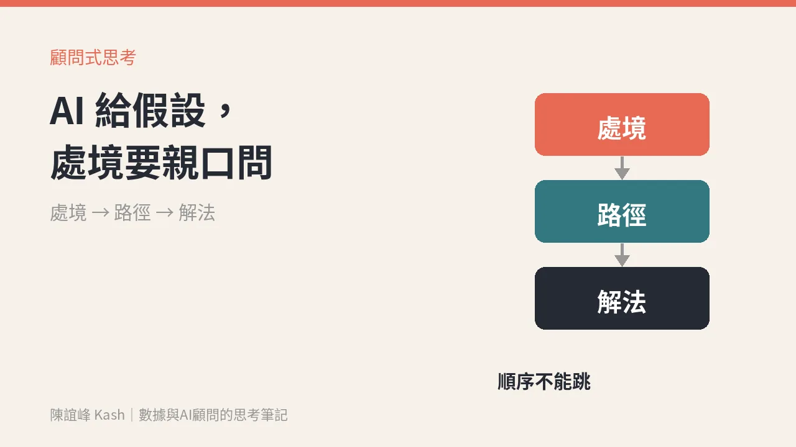

AI 說它讀得出客戶動機：顧問式銷售，還是要親口問出處境
工具可以幫你猜對方是什麼個性，但猜不出他公司這一季卡在哪裡。AI 給的是假設，真正的答案，要在會議裡用一個好問題去問出來。

這週 X 上有一則討論度不低的新聞：一個叫 Thorsten-4 的「大型心理模型」，宣稱分析電子郵件、會議和聊天紀錄，就能替人在 50 項行為特質上打分數，預測對方的動機、決策風格和反應。
依 X 上的熱議摘要，它宣稱準確率 90%。
先講清楚：這個數字是對方自己的說法，我沒有查到可以驗證的公開資料，所以這篇不把它當事實。
但我想談的不是它準不準，而是另一個問題：就算它真的很準，業務和顧問就可以不用問了嗎？
「他是什麼樣的人」和「他現在卡在哪裡」，是兩件事
做業務的人都知道，了解客戶的個性很有用。他喜歡數據還是故事、決策快還是慢、在意風險還是機會。這些資訊能幫你調整說話的方式。
但成交卡住的地方，通常不在個性。
卡住的是：他們公司這一季的目標改了、預算被凍結了、老闆換人了、上一個導入的系統出了包、真正能拍板的人根本不在會議室裡。
這些是處境。處境不會寫在一個人的說話風格裡，它要你去問。
客戶的一句話，可能落在三個不同的位置
在我的顧問式銷售一日工作坊裡，上午花最多時間練的，就是分辨一件事：
客戶講的這句話，是他的處境、他以為的路徑，還是他自己先拍的答案？
舉一句最常聽到的話：「我們要導入 AI。」
- 它可能是處境：「競爭對手都在做，老闆每週都在問，我壓力很大。」
- 它可能是路徑：「我們覺得客服成本太高，AI 應該可以降下來。」
- 它也可能只是答案：「預算已經編了，你們報個價就好。」
同一句話，三種位置，接下來該做的事完全不同。
分不清楚，就很容易把「他講出口的答案」當成「唯一的答案」，然後熬夜做出一份對方看三十秒就說「不是這個」的提案。
AI 可以幫你準備，但順序不能跳
我不反對用 AI 幫忙做功課。會議前讓 AI 整理客戶公開的資料、過去的往來紀錄、可能在意的議題，這些都很省時間。
但要記得，AI 給你的是假設，不是答案。
顧問式銷售的順序是：先進入處境，再談路徑，最後才碰解法。這個順序不能跳。
AI 能幫你在第一步之前多準備一點，但不能替你走完第一步。
把 AI 的假設，變成會議裡的一個好問題
具體怎麼做？我會用三個步驟。
一、會前：讓 AI 列出假設，而不是結論。
請 AI 整理之後，把結果寫成「我猜他現在最在意的可能是……」，而不是「他在意的是……」。一字之差，你進會議的心態就不一樣。
二、會中：把假設改寫成開放式問題。
假設「他可能在擔心預算」，就不要問「您是不是擔心預算？」這是封閉題，對方只會回答是或不是。
改成：「這個案子在內部推動時，大家最常卡在哪個環節？」讓他自己說出處境。
三、會後：記下他實際說了什麼，對照你的假設。
哪些猜對了、哪些猜錯了、哪些是你完全沒想到的。這份紀錄，就是下次見面前最好的準備，也是 CRM 裡最值錢的那一欄。
數據不是報表，是下一筆生意。客戶親口說的處境，就是最貴的那筆數據。
週一可以先做的一件事
挑一個你這週要見的客戶，在會議前寫下三句話：
- 我猜他現在的處境是什麼？
- 他可能以為的路徑是什麼？
- 他會不會已經先拍了一個答案？
然後各準備一個開放式問題帶進會議。
AI 再會讀人，也讀不出對方公司這一季發生了什麼事。那個答案，還是要你親口問出來。